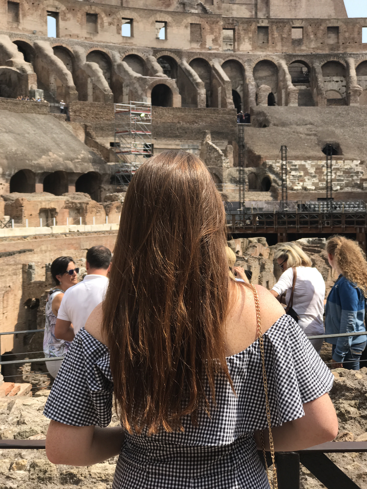
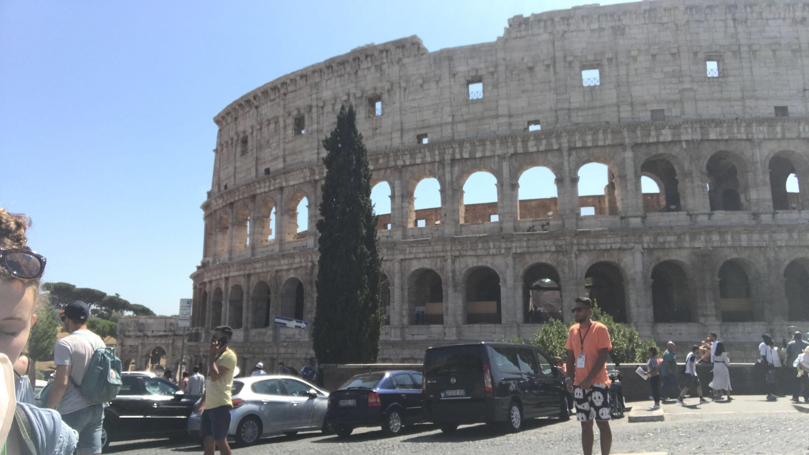
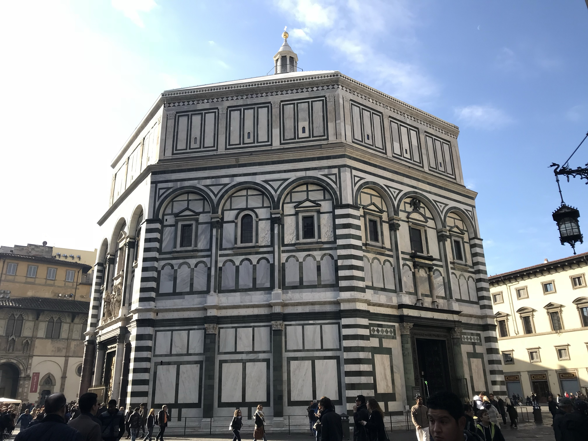

Colosseum
It is very hard to walk into the the Colosseum without thinking how this structure was built in 74 AD and finished in 80 AD. At that time there was no construction technology to help lift the rocks all the way up. The Colosseum is an oval amphitheater in the center city of Rome, Italy. It is shaped like an elliptical over to allow the editor of the games to see everything going on. It is incredible that the structure still stands tall even through millions of years have passed. The Colosseum was used for many different events, but it is specially known for the gladiator fights. It had a structure of underground tunnels and cages that house gladiators and animals.
 Trevi Fountain
The Trevi Fountain is one of my favorite places to visit in Rome, Italy. It is an 85 feet tall fountain that is around 65 feet wide. When I visited for the first time, I learned that it was built at the end of an aqueduct in 19 BC. The water in the Trevi fountain actually comes from the Salone Springs which are 14 miles outside of Rome. Recently, new restrictions have been added for safety reason but it is still accessible for the public and beautiful to listen to the water falling.

The Baptistery of Saint John
During my study abroad I had a one day trip to Florence. In Florence, We visited the Baptistery of St. John. The outside decoration was incredible. I was so impressed by the massive famous doors and their meaning. This Baptistery was built over the ruins of a Roman Temple. In 1128, it was consecrated as the Baptistery of Florence. It is the oldest religious monument in Florence.
